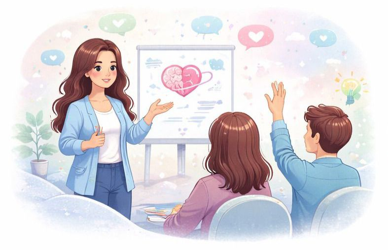

Un espacio para ti.
Un paso hacia tu bienestar.
Cada proceso empieza de una manera distinta. Encuentra un espacio para aprender, compartir y conectar contigo, a tu ritmo.
🧠 Psicoeducación en bienestar emocional
Este espacio está orientado a la educación emocional y el desarrollo personal,
donde aprenderás a comprender mejor tus emociones y cómo influyen en tu vida diaria.
✔ Conceptos básicos sobre emociones, estrés y bienestar emocional.
✔ Estrategias prácticas para el manejo emocional en la vida cotidiana.
✔ Actividades reflexivas y educativas.
✔ Material psicoeducativo elaborado con base en enfoques psicológicos actuales.
📌 Actividad psicoeducativa dirigida por estudiante de Psicología (8.º ciclo).
No sustituye evaluación ni tratamiento psicológico.
💬 Orientación emocional
La orientación emocional es un espacio de acompañamiento y escucha activa,
enfocado en ayudarte a reflexionar y fortalecer tu autocuidado emocional.
✔ Expresar tus emociones en un entorno seguro y respetuoso.
✔ Recibir orientación para mejorar tu manejo emocional.
✔ Identificar recursos personales y estrategias de autocuidado.
✔ Fortalecer tu bienestar emocional desde un enfoque preventivo.
📌 Este espacio no constituye psicoterapia ni intervención clínica.

🎓 Talleres y charlas psicoeducativas
Talleres y charlas dirigidos a colegios, academias, instituciones y público en general,
con un enfoque educativo, participativo y preventivo.
✔ Talleres grupales dinámicos e interactivos.
✔ Contenidos adaptados según la edad y necesidades del grupo.
✔ Temáticas: emociones, autoestima, estrés, ansiedad, habilidades socioemocionales.
✔ Actividades prácticas y reflexivas.
✨ Se realizan talleres y charlas personalizadas según los objetivos del grupo.
📌 Actividad psicoeducativa, no clínica.

📚 Recursos educativos
Un espacio para seguir aprendiendo sobre tus emociones y llevar el autocuidado a tu vida cotidiana, a tu propio ritmo.
- Guías y materiales: información psicoeducativa sobre emociones, autoestima y bienestar.
- Contenido educativo: reflexiones y explicaciones para comprenderte mejor.
- Herramientas prácticas: actividades para explorar tus emociones y tus hábitos de autocuidado.
Consulta qué materiales están disponibles y cómo acceder a ellos.
Consultar por WhatsApp